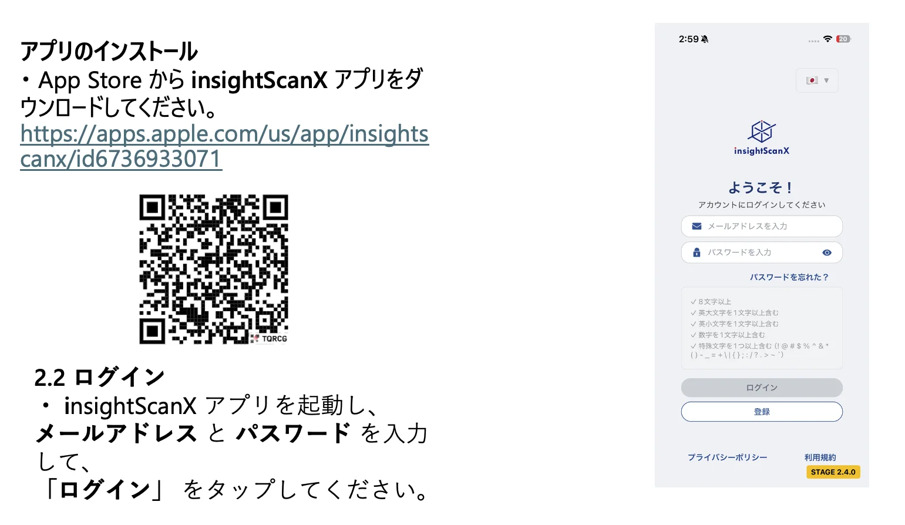
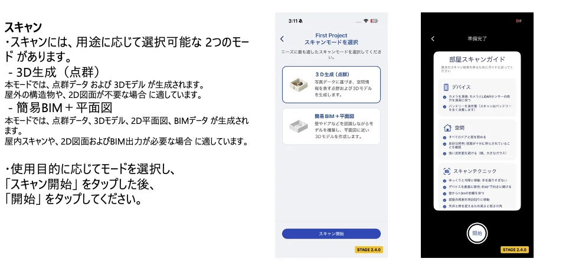
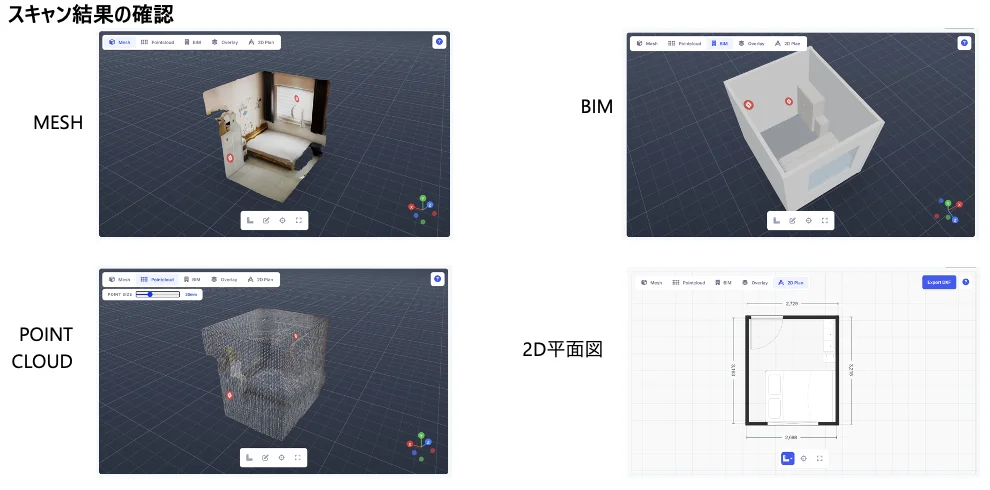
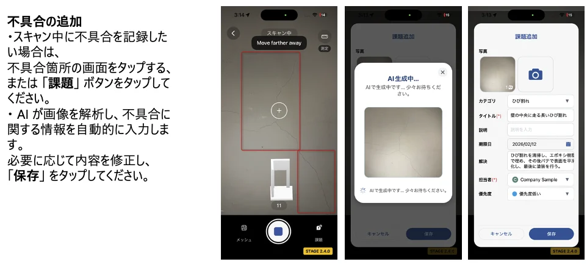
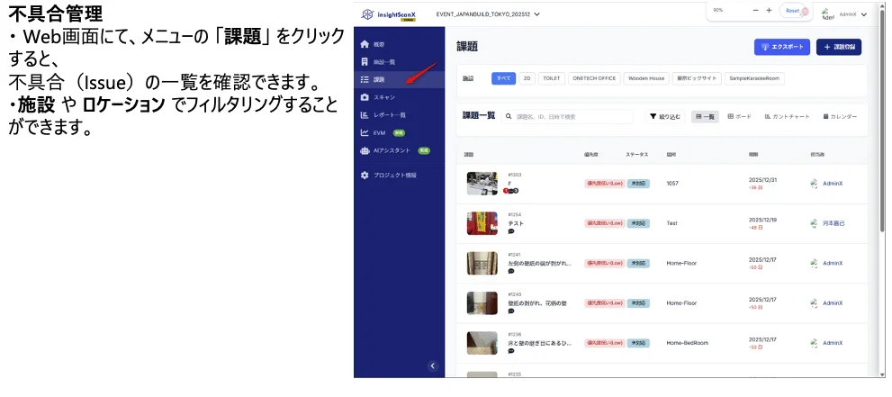
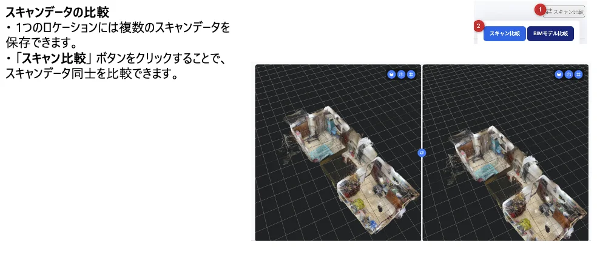
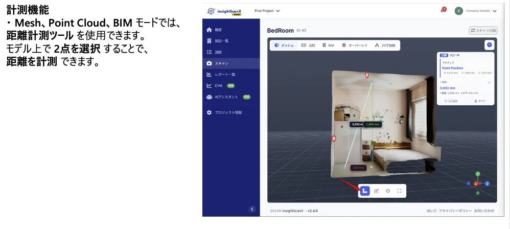
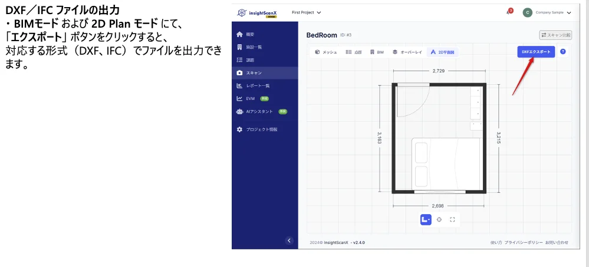

現場で起きている具体的な課題
- ✓ 図面を印刷・準備、メジャーやスケールを用意する必要がある
- ✓ 紙とペン、複数人で目視調査・数量拾いが非効率
- ✓ 図面に手書き＋写真を別撮影し、記録が分散
- ✓ 各業者に紙・電話で発注・確認が時間がかかる
- ✓ 帰社後にExcel/Wordで手作業レポート作成が負担
- ✓ メールやPDFで共有し、過去レポートを探すのに時間がかかる
製品概要とアプローチ
InsightScanXは、iPhone LiDAR 3DスキャンとAIを組み合わせた建設DX 3DスキャンAIプラットフォームです。 動画感覚でスキャンしながら現地調査を行い、建物をスキャン→平面図・不具合データ化を自動実行。 スキャンだけで①点群、②簡易BIM、③平面図、④画像一覧を作成し、クラウドでいつでもどこでも確認可能。 建設現場デジタルツインを構築し、BIM連携点群により品質管理DXを実現します。
AR不具合表示、AI不具合検出・分類（施工不良自動検出、ひび割れ自動検出、かぶり厚さ検査、鉄筋露出検出、コンクリート品質検査）、検査レポート自動生成により、"紙と人手"から"スマホとAI"へ。 現場がここまで変わります。施工品質検査アプリとして、ゼネコン品質管理を支援。建設AI品質検査により、建設現場AI活用を実現します。
アプリのインストールとログイン

App StoreからInsightScanXアプリをダウンロードし、メールアドレスとパスワードでログインするだけで、すぐに使い始められます。シンプルな操作で、誰でも簡単に3Dスキャンを開始できます。
スキャン機能

用途に応じて2つのスキャンモードから選択できます。「3D生成（点群）」モードは屋外構造物や2D図面が不要な場合に、「簡易BIM+平面図」モードは室内スキャンや2D図面・BIM出力が必要な場合に最適です。ガイドに従ってスキャンするだけで、高精度なデータを取得できます。
スキャン結果の確認

スキャンしたデータは、MESH（リアルな3Dモデル）、BIM（建築情報モデル）、POINT CLOUD（点群データ）、2D平面図（寸法付き）の4つの形式で確認できます。用途に応じて最適な表示形式を選択し、詳細な分析や報告書作成に活用できます。
AI不具合検出（不具合の追加）

スキャン中に不具合箇所をタップするか「課題」ボタンをタップするだけで、AIが画像を解析し、不具合のカテゴリ、タイトル、解決方法を自動的に入力します。手動での入力作業が大幅に削減され、検査効率が向上します。
不具合管理

Web画面の「課題」メニューから、すべての不具合（Issue）を一覧で確認できます。施設やロケーションでフィルタリングでき、優先度、ステータス、期限、担当者で管理。一覧・ボード・ガントチャート・カレンダー表示に対応し、効率的な課題管理を実現します。
スキャンデータの比較

1つのロケーションに複数のスキャンデータを保存でき、「スキャン比較」ボタンでデータ同士を比較できます。スキャンデータ比較とBIMモデル比較の2つのモードに対応し、時系列での変化を可視化し、劣化の進行状況や修繕効果を確認できます。
計測機能

Mesh、Point Cloud、BIMモードでは、距離計測ツールを使用できます。3Dモデル上で2点を選択するだけで、正確な距離を計測できます。垂直距離、水平距離、斜め距離など、様々な計測に対応しています。
DXF/IFCファイルの出力

BIMモードおよび2D Planモードで「エクスポート」ボタンをクリックすると、DXF、IFC形式でファイルを出力できます。CADソフトやBIMツールとの連携が可能で、既存のワークフローにスムーズに統合できます。
業務プロセスの変革

導入前：アナログ業務
導入後：デジタル化
| 業務プロセス | 従来のやり方（Before） | InsightScanX導入後（After） |
|---|---|---|
| 現地調査前 | 図面を印刷・準備、メジャーやスケールを用意 | 📱 スキャンしながら2D/3D図面を自動生成 |
| 現地調査（目視） | 紙とペン、複数人で目視調査／数量 | 🔍 スキャン中にAIが不具合・数量を自動検出 |
| 現地記録 | 図面に手書き＋写真を別撮影 | 📸 スキャンしながら自動で画像を取得・保存 |
| 補修調整 | 各業者に紙・電話で発注／確認 | 🧱 課題データから補修業者へ直接発注・進捗追跡 |
| レポート作成 | 帰社後にExcel／Wordで手作業 | ⚡ ボタン一つでレポート自動生成 |
| 状況共有 | メールやPDFで共有 | 🌐 3Dビュー＋課題チャットでリアルタイム共有 |
| 複数物件管理 | 過去レポートを探すのに時間 | ☁ クラウドで全物件を一括管理 |
"紙と人手"から、"スマホとAI"へ。現場がここまで変わる。
差別化ポイント

iPhone LiDAR 3Dスキャン（iOS専用）
動画感覚でスキャンしながら現地調査。iPhoneのLiDAR機能を活用し、誰でも簡単に高精度な点群データを取得できます。建設現場スキャンアプリとして、建設DX 3Dスキャンを実現。建設現場デジタルツインの基盤となる点群データを生成します。
AI不具合検出・施工品質検査
スキャン中にAIが施工不良を自動検出。ひび割れ自動検出、かぶり厚さ検査、鉄筋露出検出、コンクリート品質検査に対応。AR不具合表示で課題の位置を3D上で確認可能。建設AI品質検査により、ゼネコン品質管理を支援します。
BIM連携・点群データAI解析
スキャンだけで①点群、②簡易BIM、③平面図、④画像一覧を作成。BIM連携点群により、建設現場デジタルツインを構築。点群データAI解析で品質管理DXを実現。クラウドでいつでもどこでも、点群と複数写真、課題位置を確認可能。
検査レポート自動生成・品質管理DX
検査レポート自動生成により、レポート作成不要。業者とチャットで課題管理、複数案件管理。3D位置連携、課題を時系列で管理、複数の担当者・プロジェクトに対応。品質管理DXにより、建設現場AI活用を実現します。
導入効果（定量的な成果）
よくある調査業務での効果
作業時間の内訳（Before → After）
- 現地調査：150分 → 65分（57%削減）
- 日報作成：120分 → 10分（92%削減）
- 現場最終確認：60分 → 30分（50%削減）
- 最終報告書作成：70分 → 20分（71%削減）
- 再調査・移動：20分 → 5分（75%削減）
応用例・想定利用シーン
-
👷 建設会社：施工品質検査・ゼネコン品質管理
建設現場スキャンアプリとして、iPhone LiDAR 3Dスキャンで建物をスキャン→平面図・不具合データ化。施工品質検査アプリとして、施工不良自動検出、ひび割れ自動検出、かぶり厚さ検査、鉄筋露出検出、コンクリート品質検査を実現。建設現場デジタルツインにより、設計前の現況把握・積算準備を効率化。 -
🏢 大規模施設保全：品質管理DX（導入実績あり）
定期点検時の劣化箇所をAI自動検出。点群データAI解析により過去履歴の可視化→修繕判断を支援。BIM連携点群で担当者交代・外注時でも引き継ぎが容易。品質管理DXにより、建設現場AI活用を実現。 -
🏨 ホテル・公共施設・カラオケなどの保全管理
商業施設・オフィスビルの営繕管理を効率化。建設現場デジタルツインにより、3Dデータ＋AIで点検記録を一元化。AR不具合表示で課題位置を可視化。複数物件を修繕会社などと連携。 -
📋 現地調査アプリ：写真付き現調レポート
現地調査アプリとして、カラオケルーム、公共施設、オフィス、木造住宅など、様々な建物タイプに対応。点群、簡易BIM、平面図を自動生成。LiDAR間取り作成により、間取り図作成アプリとしても活用可能（部分対応）。検査レポート自動生成で調査・報告・修繕までを最短ルートでDX化。
まずは無料でお試しください
InsightScanXで現場調査を効率化しませんか？
お気軽にお問い合わせください。
お問い合わせフォーム
お急ぎの場合は、直接お電話またはメールでお問い合わせください
株式会社One Technology Japan
TEL: 03-5324-2652（代表）
MAIL: contact@onetech.jp